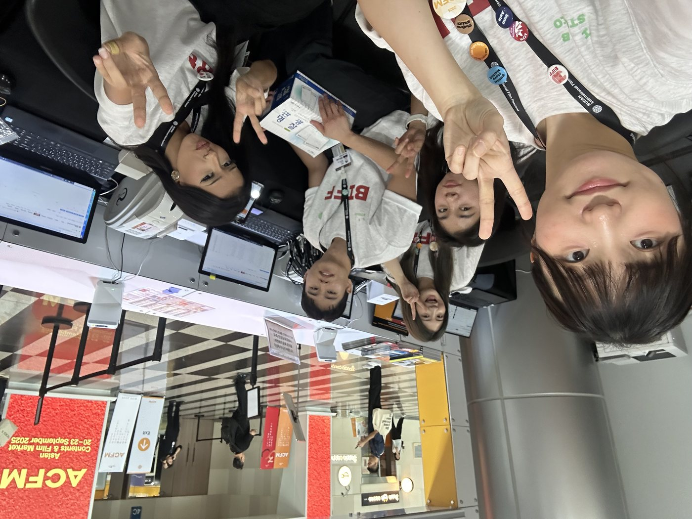

MON RÔLE
- Coordination de la logistique VIP & des accréditations pour des ambassadeurs, des célébrités et des sociétés de production
- Gestion administrative de flux de travail à forte pression
- Liaison trilingue (FR / EN / KOR) entre les équipes locales et les délégations internationales
- Suivi des accréditations sur place en temps réel
•
Sur le terrain


